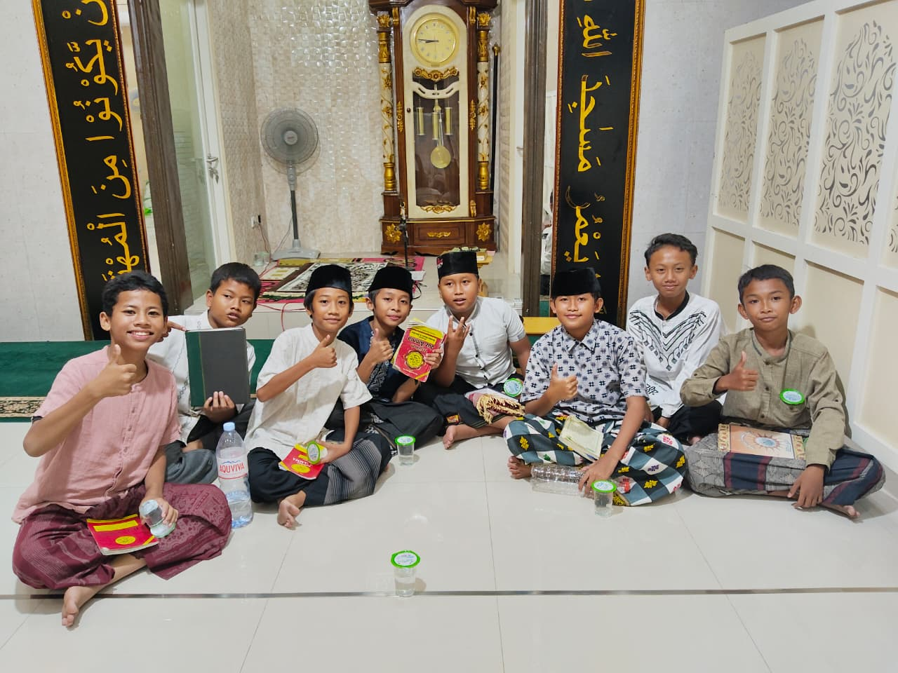
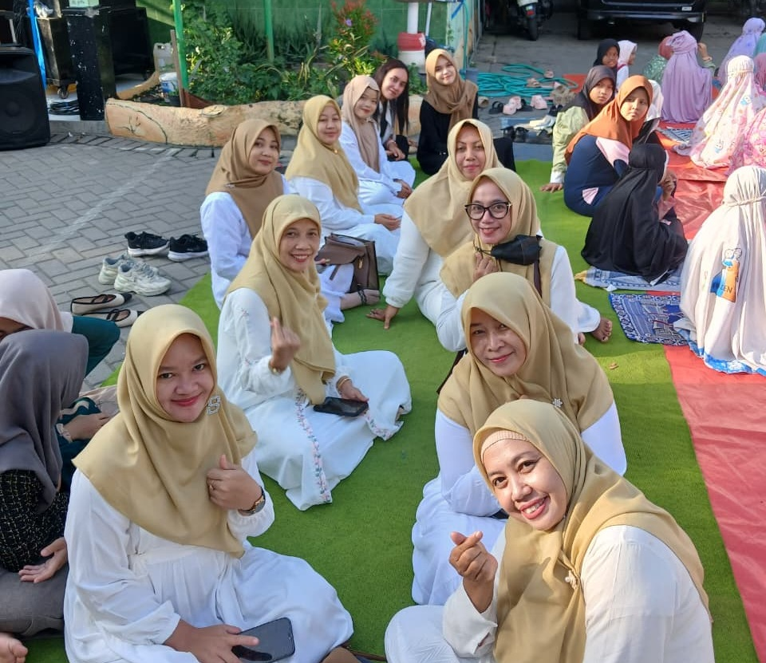

Kebonagung — Kegiatan Pesantren Ramadhan yang diselenggarakan oleh SDN Kebonagung 1 resmi ditutup pada hari Jumat, 13 Maret 2026. Penutupan ini menandai puncak dari rangkaian kegiatan keagamaan yang telah berlangsung selama lima hari, mulai dari tanggal 9 hingga 13 Maret 2026.
Rangkaian kegiatan Pesantren Ramadhan dimulai pada tanggal 9 hingga 11 Maret 2026 dengan berbagai aktivitas pembelajaran seputar Ramadhan. Selama periode tersebut, para siswa mengikuti kegiatan sholat dhuha berjamaah, mengaji Al-Qur'an, serta mendapatkan materi pembelajaran tentang keutamaan dan tata cara menjalankan ibadah di bulan suci Ramadhan.
Rangkaian Kegiatan Pesantren Ramadhan
- Sholat Dhuha Berjamaah
- Tadarus & Mengaji Al-Qur'an
- Pembelajaran Seputar Ramadhan
- Pembagian Takjil & Istigosah
- Penampilan Dai Cilik
- Sholat Tarawih & Tadarus Malam
Puncak kegiatan berlangsung pada hari Kamis, 12 Maret 2026, yang dimeriahkan dengan berbagai acara spesial. Kegiatan diawali dengan pembagian takjil, dilanjutkan dengan pembacaan istigosah yang dipanjatkan secara khusyuk. Salah satu momen yang dinantikan adalah penampilan dai cilik oleh ananda khawlah siswi yang berhasil menyampaikan tausiyah dengan penuh semangat dan mengharukan.

Setelah berbuka puasa bersama, kegiatan dilanjutkan dengan pelaksanaan sholat tarawih berjamaah dan tadarus Al-Qur'an. Kegiatan ini tidak hanya dilaksanakan di lingkungan sekolah, tetapi juga di mushollah dan masjid-masjid sekitar sekolah, sehingga mempererat silaturahmi antara warga sekolah dengan masyarakat sekitar.
Pada hari Jumat, 13 Maret 2026, kegiatan ditutup dengan pembelajaran tentang zakat fitrah dan simulasi sholat Idul Fitri. Kegiatan ini bertujuan untuk membekali para siswa dengan pemahaman praktis tentang tata cara pelaksanaan zakat dan sholat hari raya yang sebentar lagi akan dilaksanakan.
"Saya mengapresiasi kepada bapak ibu guru serta semua pihak yang telah ikut andil dalam mensukseskan kegiatan ini. Kepada para siswa, semoga senantiasa laksanakan ajaran agama terutama berpuasa dengan sebaik-baiknya."
Mei Ernawati, S.Pd., M.Pd.
Kepala Sekolah SDN Kebonagung 1
Acara penutupan dipimpin langsung oleh Kepala Sekolah, Mei Ernawati, S.Pd., M.Pd. Dalam sambutannya, beliau menyampaikan apresiasi yang setinggi-tingginya kepada seluruh bapk dan ibu guru serta semua pihak yang telah berkontribusi dalam menyukseskan rangkaian kegiatan Pesantren Ramadhan ini.
Koordinator kegiatan, Nafi'ah Wilda Zarkasi, S.Pd., turut menyampaikan rasa syukur atas kelancaran dan kesuksesan seluruh rangkaian acara. "Alhamdulillah, kegiatan Pesantren Ramadhan tahun ini dapat terlaksana dengan lancar dan sukses. Ini semua berkat kerja sama dan dukungan dari berbagai pihak," ujarnya.

Kegiatan ini juga tidak lepas dari bantuan mahasiswa Universitas Negeri Surabaya (UNESA) yang sedang melaksanakan Program Pengalaman Lapangan (PPL) di SDN Kebonagung 1. Kehadiran mereka turut mewarnai dan menyukseskan setiap rangkaian acara yang telah direncanakan.
Tidak lupa, ucapan terima kasih juga disampaikan kepada seluruh wali murid yang telah memberikan dukungan penuh selama pelaksanaan kegiatan ini. Dukungan dan partisipasi aktif dari orang tua siswa menjadi salah satu kunci keberhasilan kegiatan Pesantren Ramadhan SDN Kebonagung 1 tahun ini.
Dengan berakhirnya kegiatan Pesantren Ramadhan ini, diharapkan para siswa dapat mengamalkan ilmu yang telah didapatkan dan menjalankan ibadah puasa Ramadhan dengan lebih baik dan bermakna. Semoga kegiatan serupa dapat terus dilaksanakan di tahun-tahun mendatang dengan lebih baik lagi.
Kembali ke halaman utama --->